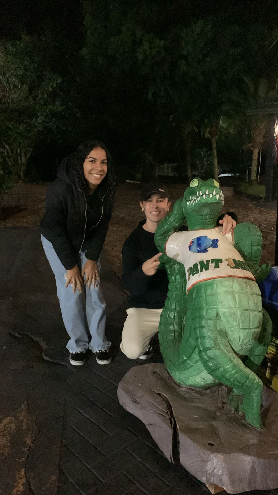

Meu amor,
Olha só pra gente! É louco pensar que já se passaram dois anos desde aquele 12 de maio de 2023, né? Parece que foi ontem que a gente estava vivendo o começo de tudo. O tempo voa quando a gente tá realizando um sonho, e o nosso... ah, o nosso começou bem ali.
Lembro de cada detalhe daquela viagem pra Toledo. A expectativa de te ter do meu lado, a preocupação boba se você ia passar mal no carro (e a felicidade GIGANTE que me invadiu quando você foi!), tudo isso deixava cada quilômetro com um gostinho especial. Ficar "todo bobo" te vendo ali, fazendo compras comigo e do lado da minha família, era uma sensação que não dá pra descrever. Era um "UAU, Deus!" que ecoava na minha cabeça, um momento que eu nunca imaginei que aconteceria comigo e que, de repente, virou a nossa realidade.
E depois, o Pantanal... Nossa, o Pantanal! Ali, naquele restaurante, eu já tava pirando e planejando o nosso futuro. Mal me segurava pra te pedir em namoro, mas eu queria que a surpresa fosse perfeita. Cada detalhe, cada plano que começou a brotar na minha cabeça naquele momento, era só o comecinho de tudo o que a gente construiu junto.
Você é o início e a continuação do meu sonho, Ana.